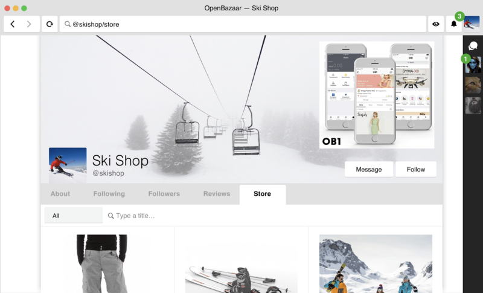
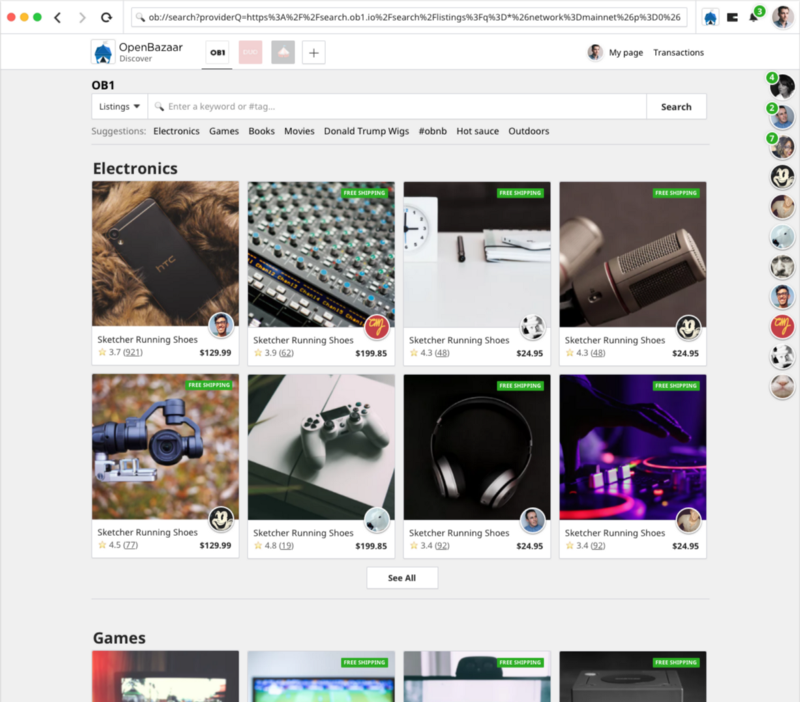
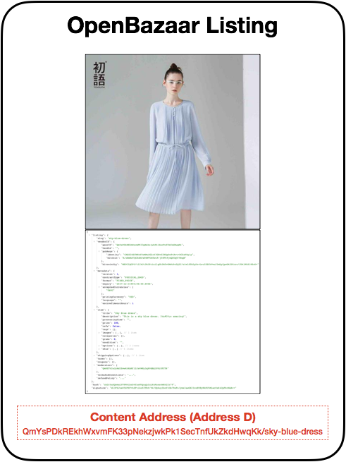
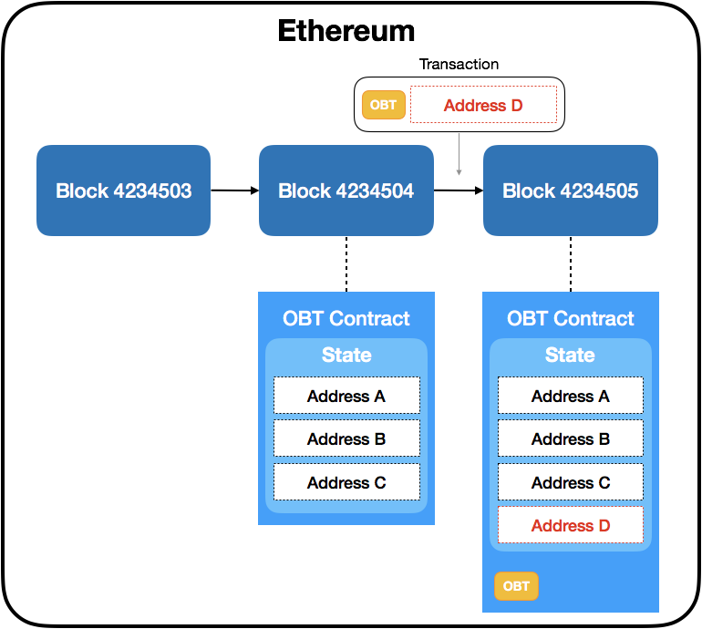
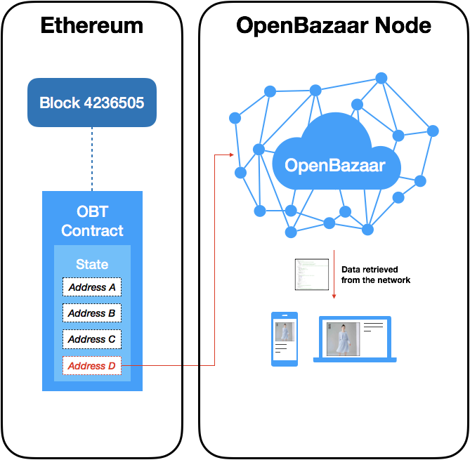

This article is a high level overview of the OpenBazaar token (OBT). The token will be used as inputs for OBT smart contracts, executed on Ethereum, to embed data pointers for content hosted on the OpenBazaar network.
Using this framework, OBT will be used by curators to monetise ‘channels’ (curated lists of content) by accepting tokens for premium ad-spaces. Moreover, OBT can be used to create decentralised channels that use market auction forces to arrange content, for which the OpenBazaar channel will be the first of its kind.
The token adds value to the OpenBazaar protocol without acting as a gatekeeper to the protocol, or threatening its stability. Ethereum contracts using the token are also independent of the token itself, enabling the system to be flexible to additional features and bug fixes.
The smart contracts that are powered by OBT add a layer of utility and value to the network.
The creation of a decentralised ad-spaces allows enhanced discovery of goods and services independent of the success or failure of OB1 and other companies built on top of OpenBazaar.
1. Discovery and Search
Decentralised networks tend to have a ‘discovery’ problem, whereby data in the network is either: a) distributed so well it is difficult for a user to crawl and parse, or b) redundantly shared in its entirety between peers, causing storage and maintenance costs to soar as the network scales.
OpenBazaar is no different. The sheer number of listings, images, and soon social content, published by nodes on the network already exceeds the capability of a typical user to find and process. As a result, third party services for search and discovery are required for the marketplace to thrive. In addition, user-driven curation is a powerful model to drive attention and sales to sellers. Incentivising this is the purpose of the OpenBazaar token.
1. OpenBazaar Tokens
OpenBazaar tokens (OBT) will be created on the Ethereum network. The token itself will have a fixed total supply. OBT can be transferred between accounts, or used as inputs for the execution of OBT smart contracts. OBT smart contracts require OBT to change the state of the contract to embed data into the Ethereum blockchain in the form of OpenBazaar-IPFS content addresses. These content addresses are essentially pointers to data hosted by peers on the OpenBazaar network.
Each OpenBazaar node monitors OBT smart contracts for state changes corresponding to new content addresses, which are used to retrieve data from the OpenBazaar network and displayed for the user in the OpenBazaar client.
Using this framework, the following primary utilities of the token, described below, can be supported.

Figure 1. Channels. With channels, any user or group can curate listings, stores, social posts, and even other channels.
1.2 Channels
A ‘channel’ is a data structure (JSON) that arranges OpenBazaar content (i.e. listings, images, stores, social content etc) into user-defined collections. This user-curated list of content, i.e. the channel data, is parsed and rendered in the client to enhance search and discovery of goods and services. Any individual or group can create a channel for any subject or theme, which users on the network can subscribe to (Figure 1). By keeping a channel updated with freshly curated content, the channel author can enhance the discovery of valuable content, goods, and services on the network that can simultaneously drive attention and sales.
To monetise a channel, an OpenBazaar smart contract can be deployed on the Ethereum network to auction off, in OBT, premium content positions within a channel. Advertisers can target popular channels to purchase ad space, paying the channel author in OBT.

Figure 2. Alice creates a listing. The listing has a content address (Address D) that allows anyone on the OpenBazaar P2P network to find the listing and download it. The content address maps to a JSON file, which is the Ricardian contract containing the good or service for sale.
1.3 Decentralising a Channel with OBT
While advertising spaces in a channel can monetise curation by an individual channel author, this model can be extended to create a decentralised channel. To explain how, we will examine the OpenBazaar channel as an example.
By default, the desktop and OB1 mobile apps will be subscribed to the OpenBazaar channel. As the default channel, it will have a strong position as the regular entry point for discovering new and interesting things for sale in OpenBazaar.

Figure 3. Alice embeds the listing’s content address (Address D) into the Ethereum blockchain. Alice purchases a state change in an OpenBazaar smart contract using OBT tokens. The transaction results in ‘Address D’ being embedded into the Ethereum blockchain.
Similar to ENS registration, an Ethereum contract will be used to execute a Vickrey auction every 12–24 hours for content spaces in the OpenBazaar channel. With a Vickrey auction, bids are anonymous with the winning bidder paying the second highest bid-value in OBT. As there are several content spaces, the top n bids will fill these spaces in order, locking up the n-1 OBT bid value.
For a user to bid for a space on the OpenBazaar channel, they first create the listing they wish to advertise and publish it to the OpenBazaar network to obtain a content address (Figure 2). Next, the user participates in Vickrey auction to embed their listing address into the state of the contract.
This <em”>address is stored in the Ethereum blockchain, while the content itself is distributed in the OpenBazaar network. The OpenBazaar server-node monitors the Ethereum blockchain for the latest channel content, stored in the OBT contract, and fetches the data corresponding to the addresses from the OpenBazaar network.</em”>
When the user navigates to the OpenBazaar channel, they will view the ‘premium’ content from the Vickrey auction’s winning bids.
In the case of the OpenBazaar channel, OBT from the winning bids will be sent to the OpenBazaar Foundation, a nonprofit entity tasked with maintaining and expanding the OpenBazaar protocol. These tokens will be used to fund operations and/or recycled back into the ecosystem.
For other decentralised channels, the OBT can be burned or saved. In the case of the latter, a governance mechanism is required to manage saved OBT between the smart contract owners. More details on this will be provided at a later date.
The Ethereum contract to support the Vickrey auction for the OpenBazaar channel can be deployed by other channel developers or communities. This would allow other decentralised channels to be maintained and funded by OBT.
Aside from increasing demand and adding value to OBT investors, it will also support a more robust mechanism for discovery on the network. However, as these channels would not necessarily be included by default in the reference desktop client or OB1 mobile app, users will need to actively find and subscribe to these channels.

Figure 4. Alice’s content is discovered by other nodes monitoring OBT contracts in Ethereum. OpenBazaar nodes monitor state changes in the OBT contract, in the Ethereum blockchain, to discover new content. The content itself is distributed across the OpenBazaar network.
1.4 Search: OpenBazaar Ad Network
A more experimental proposal is to support a decentralized advertising network using OBT. OBT can be spent to associate certain words to an OB-IPFS address for a listing. When OpenBazaar users search for goods or services using these keywords, listings with the highest OBT spend appear at the top of the search results as ‘premium’ listings. While not a complete solution to the challenges of decentralised search, OBT enables Vendors to advertise their content in response to specific search terms.
2. Platform Flexibility
The role of the token in the protocol is flexible and capable of evolving as improvements are made. The reason is that the OBT token is used as a money substitute for executing specific Ethereum smart contracts, which the OpenBazaar node monitors on the Ethereum blockchain.
This means that if there is a critical security flaw uncovered in the Vickrey auction contract, for example, the contract can be retired or replaced without threatening the viability of all OBT tokens. All that is required is an update to the OpenBazaar server to monitor a patched contract after block X, and OBT will be spent on this new contract.
This same mechanism can be used to iterate over existing contracts with new features. As the OpenBazaar protocol matures, the server can also monitor new contracts funded by OBT, which client developers can support.
3. Challenges
We have identified the following challenges with this token model below.
3.1 Abuse
Economically irrational actors (trolls, hackers, spammers) or ‘whales’ (individuals or organisations with a lot of Eth) could monopolise the OpenBazaar channel or ad-word auctions to flood the channel with spam, illegal, or abusive content.
This challenge is mitigated indirectly as there is a financial cost to this behaviour, and a sustained attack would be expensive. For a more direct approach, this can be achieved a number of ways. The channel author(s) who deploys a smart contract to receive ad-sponsorship can have ‘veto power’ over any of the content spaces, or flag content as NSFW. Client developers could also actively filter content from the OpenBazaar channel, or ad-word listings, on an opt-in basis.
Moreover, it is likely that third parties will serve the OpenBazaar channel and ad-word data to users, as the requirements to run an Ethereum node may be too much for individual users. These third parties can filter the data according to their own requirements. If users are unhappy with the degree of filtering, they can switch between service providers or run an Ethereum full node for themselves for a completely decentralised experience.
3.2 Forked Client Opt-Out
Forked client implementations of OpenBazaar can effectively ignore the OBT-enabled channels and adwords, or adopt unfair/aggressive filtering of listings. It is up to the users to make an informed choice when selecting an OpenBazaar client.
3.3 Upgrading
The process of upgrading from one Ethereum contract to another requires OpenBazaar nodes to upgrade promptly. Non-upgraded nodes will continue to monitor old contracts until upgrade. Similarly, OBT may continue to be spent on old contracts for non-upgraded nodes. While this benefits OBT investors, it is less effective for Vendors advertising their goods and services.
4. Why a Token?
Earlier this year we published Why an OpenBazaar Token Doesn’t Exist. Our reasons were:
- OpenBazaar doesn’t need a token to work
- Tokens are a new and unproven model
- A token could increase the barriers to entry
- Token sales are a regulatory unknown
We briefly examine each point below.
Objection #1: OpenBazaar doesn’t need a token to work
OpenBazaar still doesn’t need a token to work.
The OpenBazaar protocol was designed to be censorship-resistant from the beginning, and doesn’t require a protocol token (other than money) to function. We view this as a feature not a bug, as the core functions of OpenBazaar protocol (i.e. buying and selling) carries-on independent of the token.
Therefore, we strongly believe that the purpose of the token is to add value to the OpenBazaar network, and help catalyse adoption. It is for this reason that these smart contracts require OBT instead of Ethereum, as we are able to distribute free tokens to contributors and early adopters (sellers, buyers, moderators) of the protocol, and run an incentive engine through the OpenBazaar Foundation to promote adoption.
The framework we propose in this article uses smart contracts on the Ethereum blockchain to coordinate and incentivise the discovery of content on the OpenBazaar network. The first implementation of this framework, the creation of a decentralised ad-space and adwords, adds value to OpenBazaar by enhancing the search and discovery of goods services that is:
- Decentralised and censorship-resistant
- Independent of the success or failure of OB1, or other companies built on top of OpenBazaar
It is a complementary feature to third party search and discovery tools that is run by token holders (i.e. the community).
Objection #2: Tokens are a new and unproven model
This is still true, but if there is a way that a token can add utility to the protocol and value for the community, in a decentralised manner, it should be explored. If OBT is successful, it will add value to the OpenBazaar protocol in conjunction with third party search and discovery tools.
Also the token itself is somewhat independent from the contracts used to deliver content to channels and adwords. These contracts can be retired or replaced without threatening the total stock of OBT or the protocol. Thus the utility of OBT can evolve with the protocol, and pivot to new or better models in the future.
Objection #3: A token could increase the barriers to entry
The functions of an OpenBazaar token should not be a gatekeeper to using the protocol. Here, OBT (and the gas required to make changes in the smart contract) is used to enhance the search and discovery of goods and services in a decentralised manner. However, OBT is not required to search and discover listings via third parties, or any of the core functions of the protocol (i.e. buying, selling, chat, ratings etc).
Objection #4: Token sales are a regulatory unknown
The SEC recently published an investor bulletin on token sales. An excellent summary of that report can be found here.
A key quote from the investor bulletin was the issue of whether tokens fit the definition of a ‘security’:
Depending on the facts and circumstances of each individual ICO, the virtual coins or tokens that are offered or sold may be securities. If they are securities, the offer and sale of these virtual coins or tokens in an ICO are subject to the federal securities laws.
Under Section 2(a)(1) of the Securities Act and Section 3(a)(10) of the Exchange Act, a security includes “an investment contract.” See 15 U.S.C. §§ 77b-77c. An investment contract is an investment of money in a common enterprise with a reasonable expectation of profits to be derived from the entrepreneurial or managerial efforts of others.
While we are not lawyers or giving financial advice, in our opinion it is reasonable to conclude OBT is not a security according to this definition. Furthermore, platforms such as Coinlist now exist to facilitate regulatory compliant token sales to accredited investors. However, even if government agencies issued strict regulatory guidelines, it would fail to disrupt the core functions of OpenBazaar, which the token is not required for.
The token sale would be an opportunity to distribute tokens to users of OpenBazaar who believe in decentralisation and free trade and are not solely focused on speculation. It is essential that a portion of OBT is distributed to existing users, and incentivise new and existing ecommerce Vendors to extend their footprint into OpenBazaar. The utility of OBT primarily serves Vendors who wish to advertise their goods and services on the network, in a decentralised manner. While speculators will undoubtedly be interested in profiting off the token, the fundamental utility of token is unambiguous.
The token would not increase the barriers to entry into the OpenBazaar network. As mentioned earlier, the ability to use the protocol is unaffected by the existence of the token. Vendors can also advertise their goods and services via centralised channels and third party search engines.
Given that the token model described here doesn’t appear to be a security, and has concrete utility to help Vendors sell their goods and services, we feel that OBT will be viewed favourably within the emerging regulatory guidelines. If burdensome regulations are imposed on tokens in a local jurisdiction, the OpenBazaar protocol itself is unaffected by the difficulties in obtaining tokens by those users. Moreover, token holders that are not affected by these regulations are minimally impacted.
6. Conclusion
As a project, we are excited by this next chapter and the value we aim to create within the OpenBazaar ecosystem. We encourage you to reach out to us to give us your feedback and ideas in the coming months as we refine the utilities of the token.
Get Connected
Stay up to date with token developments in the OpenBazaar communities on Slack, Telegram and Discord
Do you want to help build this with us?
Download OpenBazaar right now to start buying or selling in minutes or just see what's for sale at OpenBazaar.com.
Developers, join us on Github to contribute to this open-source project!